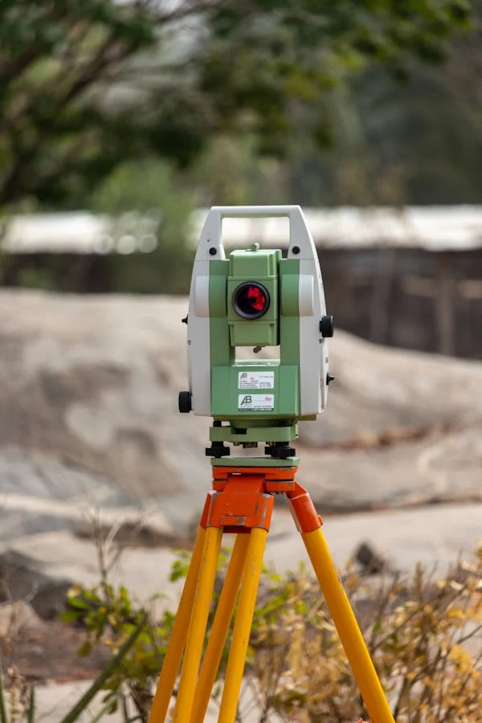
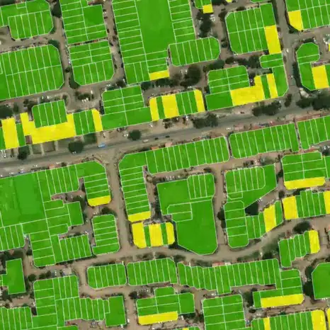
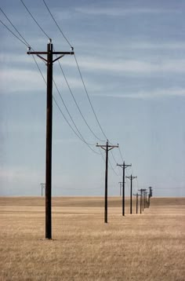
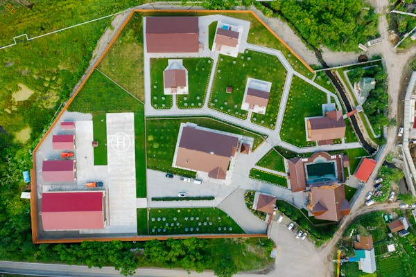

Deed Plans
Preparation and survey support for land ownership and registration documentation.
Explore service →
Professional surveying and geospatial support for land, property and infrastructure projects—from the first site visit to clear project-ready information.

Earth Scope Company Ltd supports land, property and infrastructure needs through surveying, planning and consultancy services presented with clarity and professional consistency.
Each service is presented with its own relevant image, description and direct route to enquiry.
Preparation and survey support for land ownership and registration documentation.
Explore service →
Subdivision and consolidation survey support for changing parcel boundaries.
Explore service →
Survey support for multi-unit developments and sectional ownership areas.
Explore service →Accurate survey support for construction, setting-out and infrastructure projects.
Explore service →Route and corridor survey support for pipeline planning and installation.
Explore service →
Survey data for utilities, wayleaves and infrastructure corridors.
Explore service →
Survey-informed planning for practical and efficient land development.
Explore service →
Boundary, access and planning surveys for farms and rural properties.
Explore service →
Practical land and property guidance informed by survey context.
Explore service →Define the property, project and survey need.
Review records, site conditions and required fieldwork.
Capture accurate measurements and observations.
Prepare clear plans, drawings or recommendations.
Share the service and a short description of the property or project. Placeholder phone, email and location details have been removed until verified company details are supplied.